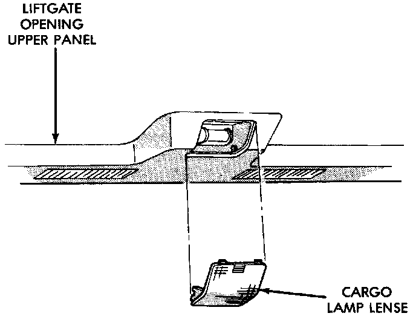

Cargo Lamp
REMOVAL1. Insert a flat blade screwdriver in slots provided at lower portion of lens.
2. Rotate screwdriver upward until lens snaps out of housing.
Cargo Lamp:

3. Remove lens from housing.
4. Remove screws attaching liftgate opening upper trim panel/cargo lamp to liftgate opening roof panel.
5. Separate trim panel from roof panel.
6. Disengage electrical connector for cargo lamp.
INSTALLATION
1. Position trim panel/cargo lamp at liftgate opening.
2. Engage electrical connector for cargo lamp.
3. Install screws attaching liftgate opening upper trim panel/cargo lamp to liftgate opening roof panel.
4. Position lens on cargo lamp and snap into place.